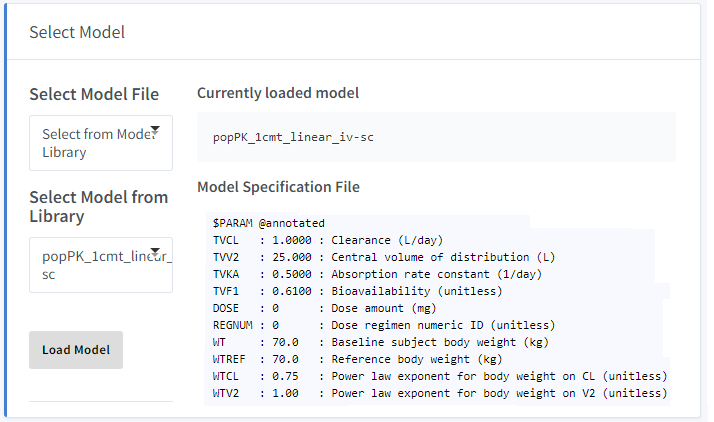
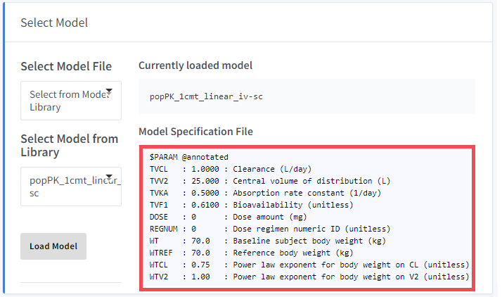
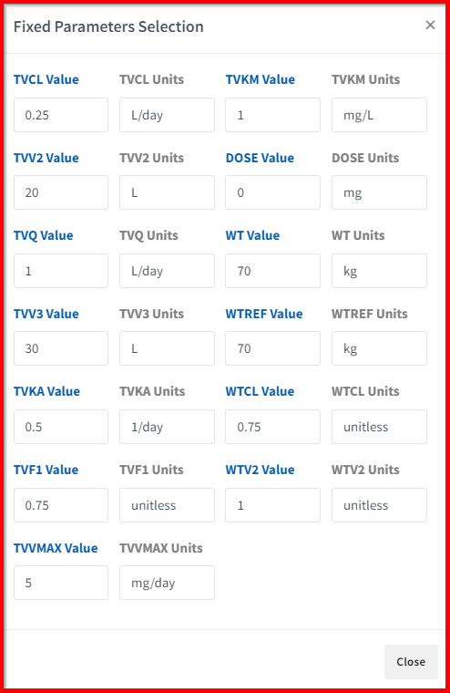
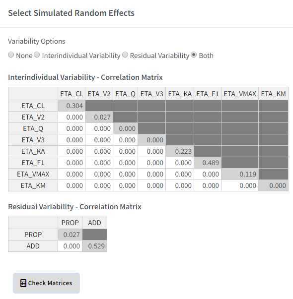

Chapter 3 Model Selection
Step 1/4 of Simulation Steps
This application comes with a model library to select from, which can be found as indexed in Select from Model Library.
Model Selection also allows users to Upload Custom Model File for user-defined model specifications that may not be in the model library.
3.1 Select from Model Library
The model library includes a collection of standard pharmacokinetic (PK) models for biologics:
3.1.1 Model Library Abbreviations
- popPK: population pharmacokinetic model
- cmt: compartment
- mm: Michaelis-Menten
- iv: intravenous injection
- sc: subcutaneous injection
- tmdd: target mediated drug disposition
- abs: absorption compartment
- const: constant
- qe: quasi-equilibrium
- qss: quasi-steady state
3.1.2 Population PK Models
- popPK_1cmt_mm_iv-sc: 1 compartment PK with Michaelis-Menten elimination & IV/SC dosing
- popPK_1cmt_linear_iv-sc: 1 compartment PK with linear elimination & IV/SC dosing
- popPK_1cmt_linear-mm_iv-sc: 1 compartment PK with Michaelis-Menten/linear elimination & IV/SC dosing
- popPK_2cmt_mm_iv-sc: 2 compartment PK with Michaelis-Menten elimination & IV/SC dosing
- popPK_2cmt_linear_iv-sc: 2 compartment PK with linear elimination & IV/SC dosing
- popPK_2cmt_linear-mm_iv-sc: 2 compartment PK with Michaelis-Menten/linear elimination & IV/SC dosing
- popPK_3cmt_linear_iv-sc: 3 compartment PK with linear elimination & IV/SC dosing
3.1.3 Target-Mediated Drug Disposition Models
- tmdd_full_2cmt_1abs: 2 compartment full TMDD model
- tmdd_mm_2cmt_1abs: 2 compartment TMDD model under Michaelis-Menten approximation
- tmdd_mm-const_2cmt_1abs: 2 compartment TMDD model under Michaelis-Menten approximation with constant concentration of target
- tmdd_qe_2cmt_1abs: 2 compartment TMDD model under quasi-equilibrium approximation
- tmdd_qe-const_2cmt_1abs: 2 compartment TMDD model under quasi-equilibrium approximation with constant concentration of target
- tmdd_qss_2cmt_1abs: 2 compartment TMDD model under quasi-steady state approximation
- tmdd_qss-const_2cmt_1abs: 2 compartment TMDD model under quasi-steady state approximation with constant concentration of target
3.2 Upload Custom Model File
Users can upload a custom model-specification file (.cpp) that is compatible with this application.
A fully annotated example mrgsolve model specification file from the model library is shown below:
Currently loaded model: popPK_1cmt_linear_iv-sc
$PARAM @annotated
TVCL : 1.0000 : Clearance (L/day)
TVV2 : 25.000 : Central volume of distribution (L)
TVKA : 0.5000 : Absorption rate constant (1/day)
TVF1 : 0.6100 : Bioavailability (unitless)
DOSE : 0 : Dose amount (mg)
REGNUM : 0 : Dose regimen numeric ID (unitless)
WT : 70.0 : Baseline subject body weight (kg)
WTREF : 70.0 : Reference body weight (kg)
WTCL : 0.75 : Power law exponent for body weight on CL (unitless)
WTV2 : 1.00 : Power law exponent for body weight on V2 (unitless)
$CMT @annotated
ABS : SC dose absorption compartment (mg)
CENT : Central compartment (mg)
$OMEGA @annotated
ETA_CL : 0.1000 : IIV on CL (L/day)
ETA_V2 : 0.1000 : IIV on V2 (L)
ETA_KA : 0.0100 : IIV on KA (1/day)
ETA_F1 : 0.0100 : IIV on F1 (unitless)
$SIGMA @annotated
PROP : 0.0001 : Proportional residual error (unitless)
ADD : 0.1000 : Additive residual error (mg/L)
$MAIN
double CL = TVCL * exp(ETA_CL) * pow(WT/WTREF, WTCL);
double V2 = TVV2 * exp(ETA_V2) * pow(WT/WTREF, WTV2);
double KA = TVKA * exp(ETA_KA);
double F1 = (exp(TVF1 + ETA_F1) / (1 + exp(TVF1 + ETA_F1)));
F_ABS = F1;
double S2 = V2; // Scaling factor for central volume: dose = mg; conc = mg/L
$ODE
dxdt_ABS = -KA*ABS;
dxdt_CENT = KA*ABS - (CL/V2)*CENT;
$TABLE
double IPRED = (CENT/S2);
double CP = IPRED;
double DV = IPRED*(1+PROP)+ADD;
// resimulate residual error (SIGMA) parameters if concentration is negative
int i = 1;
while(DV < 0 & i <= 100) {
simeps(1);
simeps(2);
DV = IPRED * (1 + PROP) + ADD;
i++;
}
if(i > 100) mrg::report("Positive concentrations could not be obtained.");
$CAPTURE @annotated
DOSE : Dose amount (mg)
REGNUM : Dose regimen numeric ID (unitless)
WT : Baseline subject body weight (kg)
WTREF : Reference body weight (kg)
DV : Plasma concentration (mg/L)
IPRED : Individual predicted plasma concentration (mg/L)mrgsolve: Code blocks
mrgsolve: Examples
mrgsolve: Annotated model specification
3.3 Load Model
After selecting a model from the library or uploading a custom model, execute Load Model .
If the model file is properly formatted, the name of the model should appear under Currently loaded model and the contents of the model file should appear under Model Specification file.
If an invalid model specification file is uploaded, users will be notified with an error message stating: (“Invalid model specification file! Please select a different model…”)

3.4 Model Parameters
3.4.1 Fixed Effects
Fixed Effects provides a pop-up window that allows users to specify values for parameters defined in the $PARAM code block of the model file.
An example of how fixed effects are linked to the model specification file is shown below.


3.4.2 Random Effects
Random Effects provides a pop-up window with variability options that allows the user to simulate variates using three options:
- Skip random effects using:
None - Simulate between-subject random effects (one draw per individual) using:
Interindividual Variability - Simulate within-subject random effects (one draw per observation) using:
Residual Variability - Simulate using between and within subject random effects using:
Both

These random effect matrices are presented in correlation matrix form where:
- Diagonal elements: variances
- Off-diagonal elements: correlations. Valid off-diagonal elements must be in the range:
[-1, 1].
The Check Matrices function initiates matrix validation tests which check for the following:
- Square matrix
- Symmetric matrix
- Pass matrix into
mrgsolve::mvgauss()and verify valid results (invalid matrices produceNaNresults)
Transient pop-up messages will appear stating the results of the validation check for each variability option in the form of: